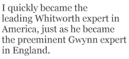

There are approximately 305,000,000 people in the United States and, until very recently, I may be the only one of them who has read the complete published works of John Whitworth or, for that matter, any of his works (which aren’t easily available here). How this came about may be of some interest. In the summer of 2007, a friend sent me a page torn from the Times Literary Supplement with the results of a readers’ poll of poems. It was of some, though not great, surprise to see that the winner and runner-up were both metrical and rhymed poems, for, knowing how general readers respect these currently unfashionable devices, I was pleased to find that I was in agreement with the vox populi. Paul Groves’s “The Mauve Tam-O’-Shanter,” a lovely lyrical elegy, was the winner, but I was more drawn to “The Examiners” by John Whitworth, a poet whose work I did not know. This poem, which earlier appeared in The Chimaera, is a splendidly paranoid rant of a poem, full of the dipodic rhythms of Kipling and Gilbert and spiked with surprising rhymes. I admired the poem, made a note to remember it, and resolved to steal from it as soon as possible.
A bit later I wrote to a poet in England expressing my gratitude to the readers of the TLS and my admiration for both poems, especially Whitworth’s. She was a friend of John’s and provided me with his email address; the rest, as they say, is history, should history be interested in these obscure proceedings. An exchange of emails ensued, followed by an exchange of books, and I quickly became the leading Whitworth expert in America, just as he became the preeminent Gwynn expert in England. That being such experts should not be of much interest to any but the two of us is to miss the point; if called upon, in some Ph.D. defense in the afterlife, to account for Whitworth’s worth (sorry), I will be ready. We have exchanged poems and messages for some months now, and I trust that the practice will continue. For me, he has opened up possibilities for expression in that gray area we call “light verse,” though both of us know that — for the poet who writes both it and the “hard stuff” — there is really little distinction to be made between the way that one feels about the two. “He weeps by the side of the ocean, / He weeps on the top of the hill,” said Mr. Lear. Mr. Lear knew that the source of those tears could be either joy or pain or both. Reading John’s poems, I recognize a brother, a friend, and a fellow under-achiever (as such things are measured in this world), and I am proud that I have made his work known to friends who have unreservedly admired it. As luck would have it, I spent the night in Canterbury, where John and his family live, only a few days after “The Examiners” appeared in the TLS. This missed opportunity to meet him will, I trust, be rectified in the future, when I can say to his face the laudatory things that I say here in print.
***
A Gwynn poem inspired by Whitworth:
Making Do: Variations on a Theme
Here’s a poem inspired, or at least started off, by something I read. “Learn to fossilize your hamster,” it said. But there aren’t rhymes for hamster.
— John Whitworth on “Rabbit Rabbit”
If there aren’t rhymes for hamster
Make a gerbil do instead.
There’s no need to make a damned stir
If there aren’t rhymes for hamster;
Even though you move to Amster-
dam de hamster will be said.
If there aren’t rhymes for hamster
Make a gerbil do instead.
If you find no rhymes for gerbil
Let a pet rat take its place.
There’s no need to feel so terrible
If you find no rhymes for gerbil.
Feed the pet rat the same herbal
Recipes — it’s no disgrace!
If you find no rhymes for gerbil
Let a pet rat take its place.
If you’re stuck for rhymes for pet rat
Put a rabbit in your pen
Though your fingertips get et at.
If you’re stuck for rhymes for pet rat
You can readily still get that
Rhyming rodent-word right then.
If you’re stuck for rhymes for pet rat
Put a rabbit in your pen.
If you cannot rhyme that rabbit
Make a curry or a stew.
Hire a hand to take a stab at
(If you cannot rhyme that rabbit)
Dressing it who’s made a habit
Of those tasks you cannot do.
If you cannot rhyme that rabbit
Make a curry or a stew.
R. S. Gwynn is University Professor and Poet-in-Residence at Lamar University in Beaumont, Texas, where he has taught since 1976. No Word of Farewell: Selected Poems 1970–2000 is his most recent collection.